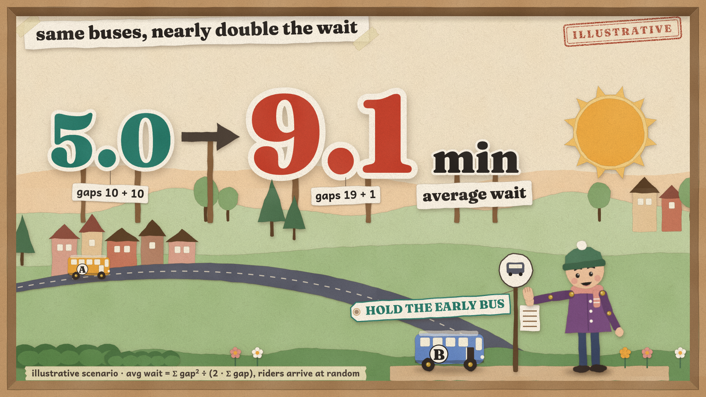
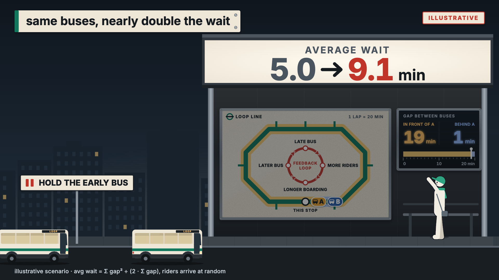
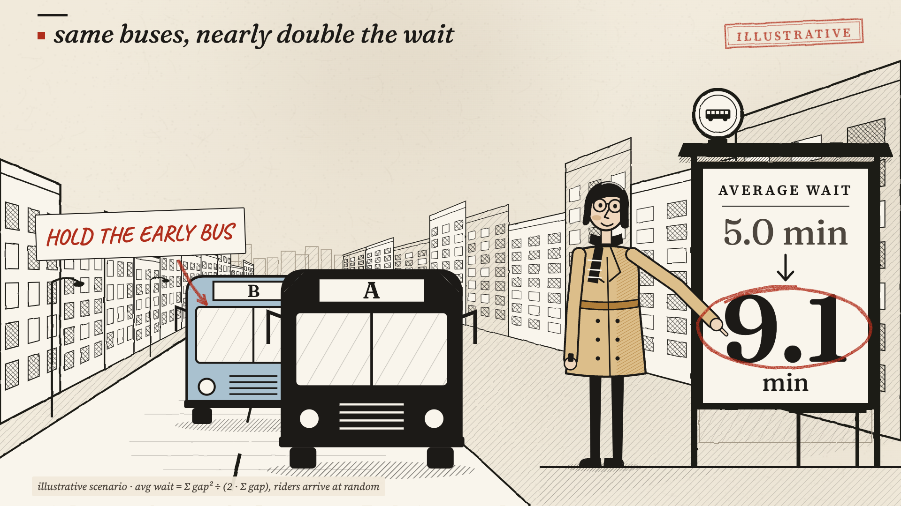
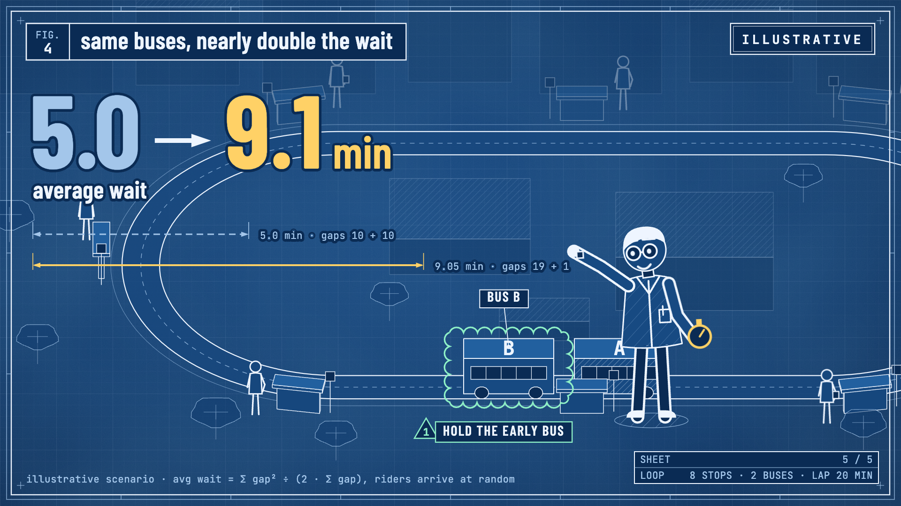
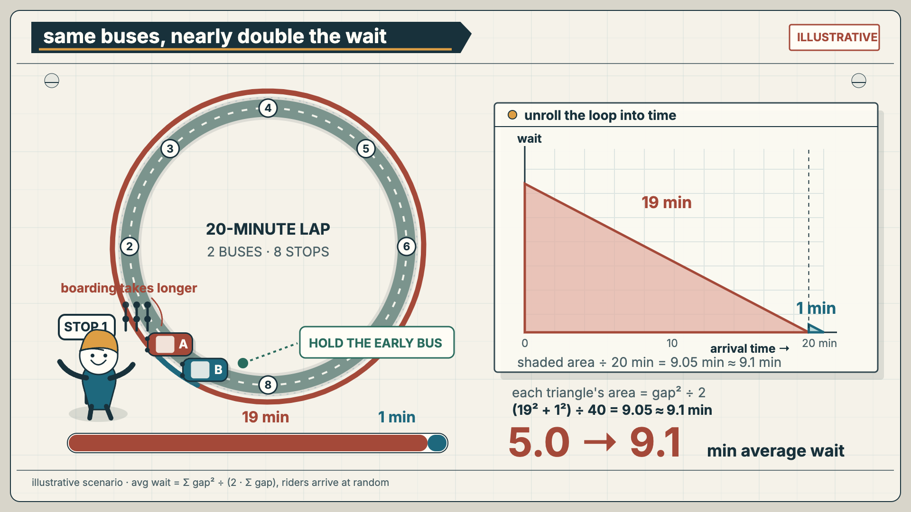
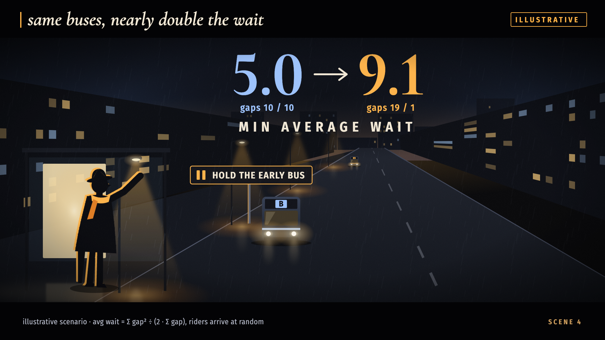
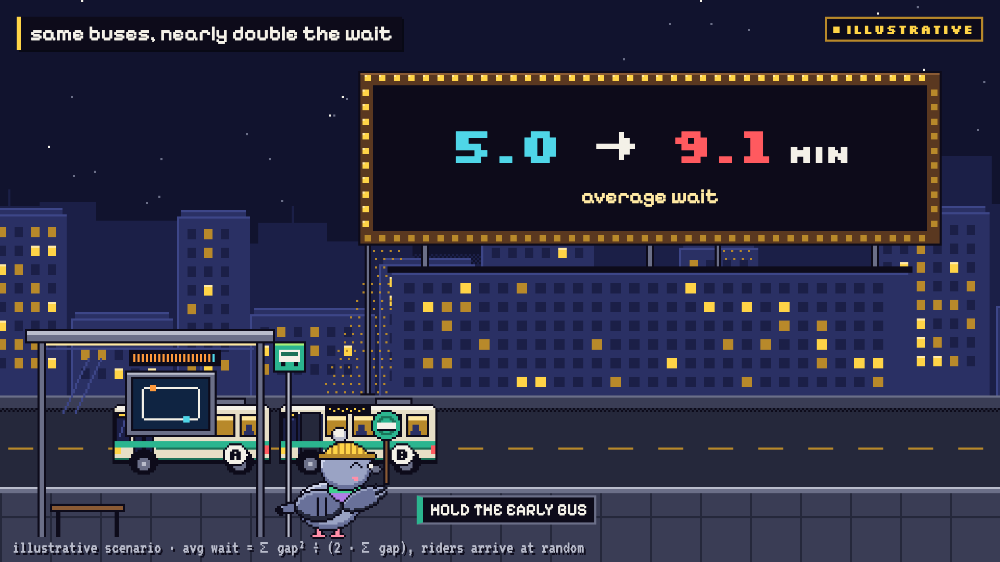

Paper Diorama
Public talks · education
A warm, tactile model makes buses, delays, and waiting people easy to follow.
Every demo explains the same illustrative bus-bunching problem with the same numbers and narration. The art direction changes; the evidence does not. Open a demo, advance with the arrow keys, press N for notes and M for reduced motion.

Public talks · education
A warm, tactile model makes buses, delays, and waiting people easy to follow.

Business · operations
The route and gap gauge become a precise boardroom explanation.

Policy · evidence stories
Human consequences and documentary-style labels carry the argument together.

Research · engineering
A technical plan keeps the mechanism and its measurements in the same frame.

Math · technical teaching
The changing bus gaps become geometric areas before the wait-time equation appears.

Keynotes · large stages
A night-time city creates scale and gives the final number a dramatic entrance.

Playful teaching · research
The original style: an expressive guide moves through a game-like system.